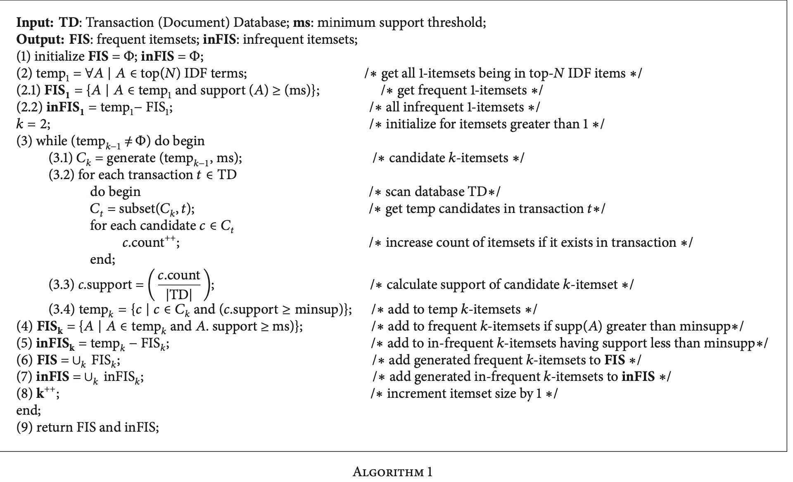
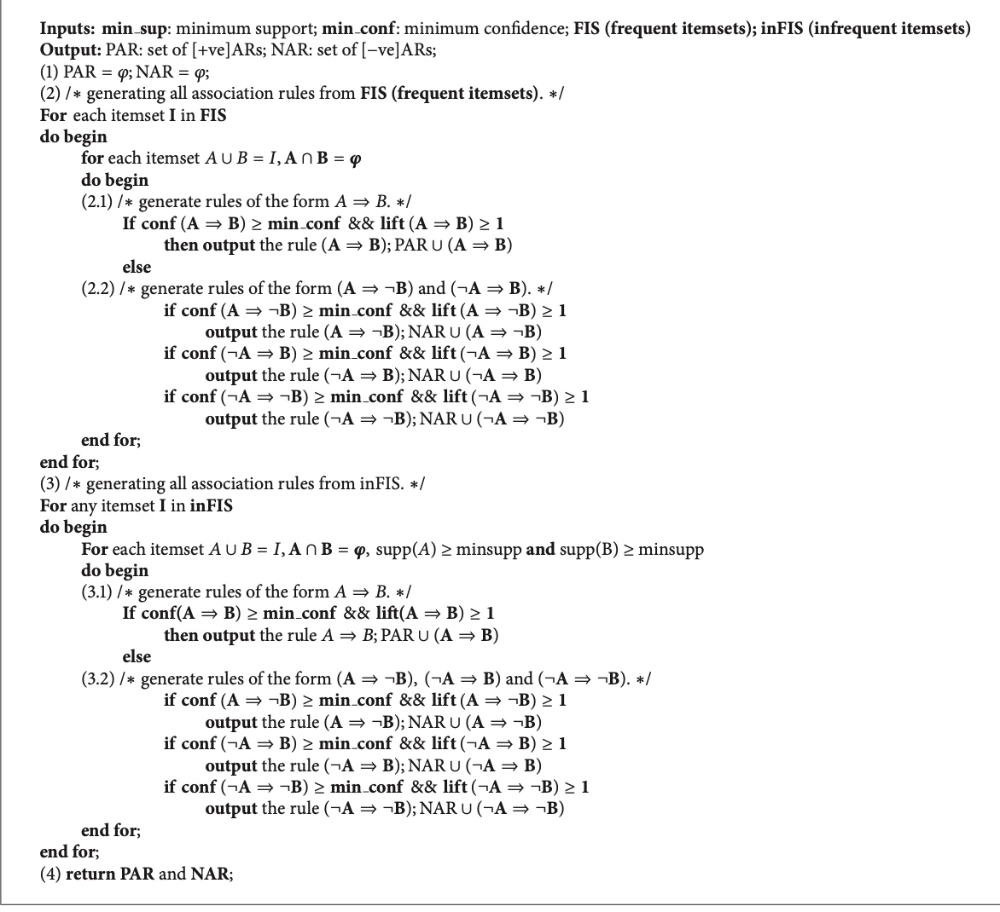

比赛学习
天池
- o2o优惠券
https://tianchi.aliyun.com/getStart/information.htm?raceId=231593
https://github.com/wepe/O2O-Coupon-Usage-Forecast/tree/master/code
- fashion_tag
https://github.com/DavexPro/fashion-tag
https://github.com/tworuler/tensorcv
kaggle
kaggle-ctr预估
https://www.kaggle.com/c/avazu-ctr-prediction/discussion/12608
https://github.com/guestwalk/kaggle-avazu
FM学习https://www.jianshu.com/p/152ae633fb00
kesci
深度学习-开源图片数据库
1. 图像
| 图像库 | 图片说明 | 链接 |
|---|---|---|
| ImageNet | 按照WordNet结构整理，平均每个类别下有500张图片 | http://www.image-net.org/ |
| CIFAR-10 | 6w张32x32的图片，分为10类(飞机，鸟，猫，船..) | http://www.cs.toronto.edu/~kriz/cifar.html |
| CIFAR-100 | 20大类，100小类 | |
| MNIST | 7w,28x28手写识别0-9 | http://yann.lecun.com/exdb/mnist/ |
| LFW | 1.3w 人脸数据, 无分类 | http://vis-www.cs.umass.edu/lfw/ |
| Caltech 101 | 101类objects, 300x200 | http://www.vision.caltech.edu/Image_Datasets/Caltech101/ |
| Caltech 256 | 256类objects, 300x200 | http://www.vision.caltech.edu/Image_Datasets/Caltech256/ |
服装类
| 图像库 | 图片说明 | 链接 |
|---|---|---|
| Fashion--MNIST | 服装类，类似手写识别风格，衣服鞋包 | https://github.com/zalandoresearch/fashion-mnist |
| DeepFashion | http://mmlab.ie.cuhk.edu.hk/projects/DeepFashion.html |
其他
| 图像库 | 图片说明 | 链接 |
|---|---|---|
| Quick Draw | google的涂鸦数据集, 345类, 5kw张 | https://quickdraw.withgoogle.com， https://github.com/googlecreativelab/quickdraw-dataset/data |
| kaggle casts vs. dogs | 2.5w | https://www.kaggle.com/c/dogs-vs-cats/data |
| COCO common objects Dataset | 微软, 物体检测,分割 | http://cocodataset.org/#home |
| Stanford 40 Actions | 斯坦福，人的40种动作(刷牙，扫地，爬山，做饭..) | http://vision.stanford.edu/Datasets/40actions.html |
人脸数据集
- 自然脸部检测（LFW）数据集：包含13000幅经裁剪的脸部区域图像（采用Viola-Jones检测框架），标记了图中人的姓名。数据集中的一部分人有两幅图像，人们常用它训练脸部匹配系统。
- UMD Faces：已标注的人脸图像数据集，包括来自8501个人的367920幅脸部图像。
- CASIA WebFace：包含453453幅人脸图像的数据集，经人脸检测后共识别出超过10575个身份。需要进行一些筛选来提高质量。
- MS-Celeb-1M：100万幅世界名人图像。需要进行一些筛选才能在深度神经网络上取得最佳结果。
- Olivetti：一些人的不同脸部图像。
- Multi-Pie：CMU的Multi-PIE人脸数据库
- Face-in-Action
- JACFEE：日本人和高加索人不同情绪的脸部表情
- FERET：脸部识别技术数据库
- mmifacedb：MMI脸部表情数据库
- IndianFaceDatabase 耶鲁人脸数据库和耶鲁人脸数据库B)。
2.文本数据集
- 20个新闻组数据集：分类任务，将出现的词映射至新闻组ID。文本分类的经典数据集之一，通常可以用于纯分类算法的基准测试，或者用于验证任意一种IR/索引算法。
- 路透社新闻数据集：（较老）纯分类用途的新闻电讯文本数据集。常用于教程。
- Penn Treebank：用于下一词预测或下一字预测。
- UCI垃圾邮件数据库Spambase：（较老）来自著名的UCI机器学习库的经典垃圾邮件数据集。该数据集经过细致的审编，因此可以作为个性化垃圾邮件筛选学习的基线。
- 广播新闻数据集：用于下一词预测的经典大型文本数据集。
- 文本分类数据集： 来自Zhang等人，2015；八个内容丰富的文本分类数据集，可用于新文本分类基线的基准测试。样例大小为120K至3.6M，问题所涉及的类别从两个到14个不等。数据集内容来自DBPedia、亚马逊、Yelp、雅虎和AG。
- WikiText：取自高质量维基百科文章的大型语言模型语料库，由Salesforce MetaMind进行审编。
- SQuAD：斯坦福问答数据集——用途广泛的问题回答及阅读理解数据集，每项问题的答案都是一段文本。
- 十亿词数据集：大型通用语言模型数据集，常用于训练Word2Vec等词的分布式表示。
- Common Crawl： 万兆字节级的网页爬取数据集——最常用于学习词向量。可通过亚马逊S3免费获取。数据集的内容从万维网爬取获得，因此也可以用作互联网的数据集。
- 谷歌图书Ngram数据集：取自谷歌图书的连续词数据，是探索一个词何时开始被广泛使用的简易方法。
- Yelp公开数据集：Yelp商户、评论及用户数据的子集，用于自然语言处理（NLP）。
参考资料
https://blog.csdn.net/chaipp0607/article/details/71403797
目录
Github:
- 统计学 cheet-sheet整理
基础工具
- markdown，git，R/python，MR,SQL
- linux
获取数据
数据清洗+ 探索性分析
- 数据可视化
统计推断
机器学习
深度学习
数据产品开发
平台架构
study list
https://tracholar.github.io/wiki/#tools
pyspark RDD
http://www.jianshu.com/p/4cd22eda363f
知识发现
关于DM的process model一般有如下几种：
1.CRISP-DM 跨行业数据挖掘标准流程，将一个KDD工程分为6个不同的阶段。这种方式只定义了要做什么没有说how to do
- 商业理解：确定商业的目标，发现影响结果的重要因素。
- 数据理解
- 数据准备
- 建模
- 评估
- 部署
一. Association Rules
传统的，根据支持度和置信度，挖掘出频繁项集。但是很显然的会面临很多问题。
1) 低频次的并不代表不重要，他们可能能产生出重要的negative association rules (NARs)。 低频购买换个角度就是高频不购买
2) 个人感觉频繁项集不一定是有价值信息的
1 经典AR
先说下基本定义，
| B | not B | 合计 | |
|---|---|---|---|
| A | a | b | a+b |
| not A | C | d | c+d |
| 合计 | a+c | b+d | a+b+c+d |
支持度sup(A=>B) = P(A&B) = a/n
置信度 conf(A=>B) = P(B|A) = a/(a+b)
提升度 lift(A=>B)= p(A&B)/P(A)/P(B) # 是否独立 > 1表明正相关， <1 表示负相关。 可以看做相关系数
一般是设置最低的支持度和置信度，一旦满足这两个就认为是一条rule.
用这种方式得到的结果很可能是不可信的，或者说不全面的，比如如下的一个具体例子。可知sup(A=>B)= 0.45, conf(A=>B)=0.9. 看似较高，但是没法得出 买了A就买B的结论，因为不买A=>买B也是一样，或者说买B本身就很高，与是否买A无关。
| B | not B | 合计 | |
|---|---|---|---|
| A | 450 | 50 | a+b |
| not A | 450 | 50 | c+d |
| 合计 | a+c | b+d | a+b+c+d |
相关系数 \(corr_ = \frac{sup(A交B) - sup(A)sup(B)}{\sqrt{supA(1-supA)supB(1-supB)}} \)
通过卡方检验，可以推倒出卡方检验的统计量与corr是一致的。
常用的算法 Apriori， FP-Growth
2 NAR
比如A=> not B
参考【4】中作者方案包括2步：1)首先找到frequent和infrequent的itemset 2)判断是positive还是negative association
具体的
(1) infrequent: 通过IDF加权，过滤掉出现次数非常少的，或者是在不同人之间分布比较均匀的term

(2) 有了这些候选的itemset后，根据定义计算positive或者negative的rule

注意：
A => B 不一定能推出 not B => not A
3 infrequent itemset
high utility infrequent itemsets. 频次不高，但是有更高的价值。UPRI算法(utility pattern rare itemset algorithm)
简单的说，传统的AR是 \(I_1,...I_m => I_{m+1}(sup, conf)\)，而基于utility的是\(I_1,...I_m => Obj(sup, conf, u)\)。 传统的AR其实相当于将频次作为效用的度量。实际中不同的商品所带来的效用是不同，比如当关注cost，profit时候，对零售商来说，高售价的商品就比低售价的商品重要。
区别于传统的基于itemset的ICOA (itemset-correlation-oriented association)，基于目标效用的OOA (objective-oriented utility-based association)mining
related work:
- 由min_sup, min_conf的方式改为 topK的方式
- Sese and Morishita 度量usefulness的方式：利用规则相关系数的显著性
- Han 通过min_l()的方式挖掘topK的closed patterns
参考【5】中挖
2. case
参考【4】中处理
(1)IDF加权,考虑到term不同权重
3.工具
(1) positive association rules—— apriori
python的sklearn中貌似没有直接的apriori工具,在pypi上找到这个efficient-apriori https://pypi.org/search/?q=apriori。 或者在github上搜索 https://github.com/topics/association-rules?l=python
(2) negative association rules ------
可以用一种比较tricky的方法，即对于我们所关心的item，在数据集中添加 not_item项即可。比如基于R的实现 https://subscription.packtpub.com/book/big_data_and_business_intelligence/9781788621878/1/ch01lvl1sec14/negative-association-rules
4.统计显著性
https://github.com/BorgwardtLab/significant-subgraph-mining
参考资料
- A survey of data mining and knowledge discovery process models and methodologies
- A review and analysis on knowledge discovery and data mining techniques(回溯了各种关联规则相关的)
- https://www.ixueshu.com/document/2a80aefb26b9e3e9318947a18e7f9386.html
- Negative and Positive Association Rules Mining from Text Using Frequent and Infrequent Itemsets
- mining high utility itemsets
神经网络解释性问题
https://ask.hellobi.com/blog/zlx19930503/10578
但是深度学习是一个黑箱。我第一次听说它时，就对其工作原理非常费解。几年过去了，我仍然在探索合理的答案。尝试解释现代神经网络很难，但是至关重要。如果我们打算依赖深度学习制造新的 AI、处理敏感的用户数据，或者开药，那么我们必须理解这些模型的工作原理。
很幸运，学界人士也提出了很多对深度学习的理解。以下是几个近期论文示例：
Grad-Cam（Selvaraju et. al. 2017）
使用最后卷积层的梯度生成热力图，突出显示输入图像中的重要像素用于分类。
LIME（Ribeiro et. al. 2016）
使用稀疏线性模型（可轻松识别重要特征）逼近 DNN 的预测。
论文地址：https://arxiv.org/abs/1602.04938
一些中文解读：https://www.oreilly.com.cn/ideas/?p=563；
http://geek.csdn.net/news/detail/66259
一个例子
http://marcotcr.github.io/lime/tutorials/Lime%20-%20basic%20usage%2C%20two%20class%20case.html
https://www.jiqizhixin.com/articles/2017-12-20-2
特征可视化（Olah 2017）
对于带有随机噪声的图像，优化像素来激活训练的 DNN 中的特定神经元，进而可视化神经元学到的内容。
Loss Landscape（Li et. al. 2017）
可视化 DNN 尝试最小化的非凸损失函数，查看架构／参数如何影响损失情况。
关于xgboost
R: https://github.com/AppliedDataSciencePartners/xgboostExplainer
python https://github.com/gameofdimension/xgboost_explainer
Copyright © 2015 Powered by MWeb, Theme used GitHub CSS.